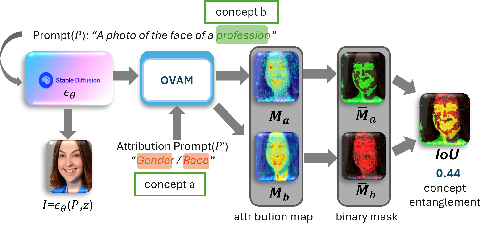
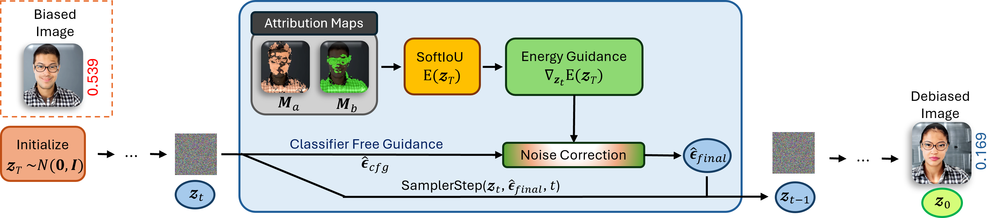
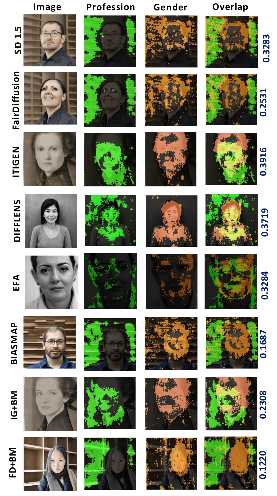
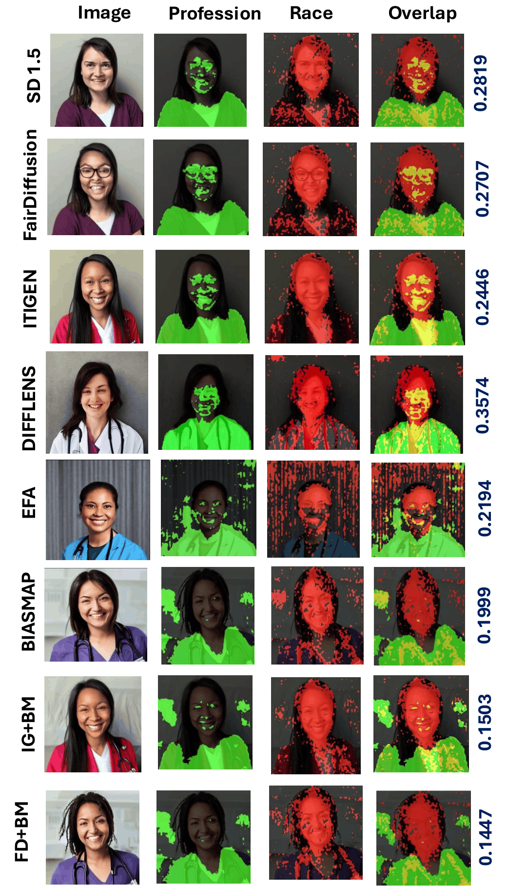

Cross-attention attribution maps expose the representational bias that distributional fairness leaves untouched.

Bias discovery is critical for black-box generative models, especially text-to-image (TTI) models. Existing work focuses predominantly on output-level demographic distributions, which do not guarantee that concept representations are disentangled after mitigation. We propose BiasMap, a framework for uncovering latent concept-level representational biases in U-Net-based Stable Diffusion models.
BiasMap leverages cross-attention attribution maps to reveal structural entanglements between demographics (gender, race) and semantics (professions). Using these maps, we quantify spatial demographic-semantic entanglement via Intersection over Union (IoU), offering a lens into bias that remains hidden in existing fairness approaches. We further use BiasMap for mitigation through energy-guided diffusion sampling that modifies the latent noise space and minimizes the expected SoftIoU during denoising. Our findings show that existing fairness interventions may reduce the output distributional gap but often fail to disentangle concept-level coupling, whereas our method mitigates concept entanglement during generation while complementing distributional bias mitigation.
From a biased generation, BiasMap computes a differentiable SoftIoU between the demographic and semantic attribution maps and uses its gradient as an energy term. Combined with classifier-free guidance, this steers each denoising step toward latent states with lower concept entanglement, no retraining and no architectural change to the diffusion model.

Across baselines, the profession mask and the demographic mask sit on top of each other on the face. BiasMap pushes the profession mask off the face onto professional markers while keeping the demographic mask on the face, driving the overlap (IoU) down.


Cross-attention attribution maps reveal bias as structured spatial patterns during diffusion, concentrated in the early down-sampling and final up-sampling 64×64 blocks, following a convex non-monotonic trend that mirrors the U-Net hierarchy.
Professions remain gendered or racialized inside the model even when output distributions look balanced. The mIoU metric exposes persistent spatial co-activation that distributional fairness measures completely miss.
BiasMap steers sampling toward lower concept entanglement, achieving 40.8% mIoU reduction for gender and 39.6% for race while preserving image quality, targeting the root cause rather than adjusting outputs after the fact.
@inproceedings{biasmap2026,
title = {BiasMap: Leveraging Cross-Attentions to Discover and
Mitigate Hidden Social Biases in Text-to-Image Generation},
author = {Chakraborty, Rajatsubhra and Che, Xujun and Xu, Depeng
and Faklaris, Cori and Niu, Xi and Yuan, Shuhan},
booktitle = {Proceedings of the 32nd ACM SIGKDD Conference on Knowledge
Discovery and Data Mining (KDD)},
year = {2026},
doi = {10.1145/3770855.3818098}
}